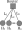

Network Topology Examples
Simple Example with 3 hosts
Imagine you want to describe a little platform with three hosts, interconnected as follows:

This can be done with the following platform file, that considers the simulated platform as a graph of hosts and network links.
<?xml version='1.0'?>
<!DOCTYPE platform SYSTEM "https://simgrid.org/simgrid.dtd">
<platform version="4.1">
<zone id="AS0" routing="Full">
<host id="host0" speed="1Gf"/>
<host id="host1" speed="2Gf"/>
<host id="host2" speed="40Gf"/>
<link id="link0" bandwidth="125MBps" latency="100us"/>
<link id="link1" bandwidth="50MBps" latency="150us"/>
<link id="link2" bandwidth="250MBps" latency="50us"/>
<route src="host0" dst="host1"><link_ctn id="link0"/><link_ctn id="link1"/></route>
<route src="host1" dst="host2"><link_ctn id="link1"/><link_ctn id="link2"/></route>
<route src="host0" dst="host2"><link_ctn id="link0"/><link_ctn id="link2"/></route>
</zone>
</platform>
The elements basic elements (with <host> and <link>) are described first, and then the routes between any pair of hosts are explicitly given with <route>.
Any host must be given a computational speed in flops while links must be given a latency and a bandwidth. You can write 1Gf for 1,000,000,000 flops (full list of units in the reference guide of <host> and <link>).
Routes defined with <route> are symmetrical by default, meaning that the list of traversed links from A to B is the same as from B to A. Explicitly define non-symmetrical routes if you prefer.
The last thing you must know on SimGrid platform files is that the
root tag must be <platform>. If the version attribute
does not match what SimGrid expects, you will be hinted to use to the
simgrid_update_xml utility to update your file.
There is often more than one way to model a given platform. For example, the above platform could also be expressed using a shortest path algorithm instead of explicitely listing all routes as in the example above.
Cluster with a Crossbar
A very common parallel computing platform is a homogeneous cluster in which hosts are interconnected via a crossbar switch with as many ports as hosts, so that any disjoint pairs of hosts can communicate concurrently at full speed. Because there is no contention on the switch, it is modeled as if there were a direct link from each host to the outgoing router. For instance:
<?xml version='1.0'?>
<!DOCTYPE platform SYSTEM "https://simgrid.org/simgrid.dtd">
<platform version="4.1">
<zone id="world" routing="Full">
<cluster id="cluster-crossbar"
prefix="node-" radical="0-65535" suffix=".simgrid.org"
speed="1Gf" bw="125MBps" lat="50us"/>
</zone>
</platform>
One specifies a name prefix and suffix for each host, and then give an integer range. In the example the cluster contains
65536 hosts (!), named node-0.simgrid.org to node-65535.simgrid.org. All hosts have the same power (1 Gflop/sec)
and are connected directly to the switch via private links with same bandwidth (125 MBytes/sec) and latency (50
microseconds).
The outgoing router is named ${prefix}${cluster_id}_router${suffix} so in this case, this is
node-cluster-crossbar_router.simgrid.org.

Torus Cluster
Many HPC facilities use torus clusters to reduce sharing and
performance loss on concurrent internal communications. Modeling this
in SimGrid is very easy. Simply add a topology="TORUS" attribute
to your cluster. Configure it with the topo_parameters="X,Y,Z"
attribute, where X, Y and Z are the dimension of your
torus.

<?xml version='1.0'?>
<!DOCTYPE platform SYSTEM "https://simgrid.org/simgrid.dtd">
<platform version="4.1">
<zone id="world" routing="Full">
<cluster id="bob_cluster" topology="TORUS" topo_parameters="3,2,2"
prefix="node-" radical="0-11" suffix=".simgrid.org"
speed="1Gf" bw="125MBps" lat="50us"
loopback_bw="100MBps" loopback_lat="0"/>
</zone>
</platform>
Note that in this example, we used loopback_bw and
loopback_lat to specify the characteristics of the loopback link
of each node (i.e., the link allowing each node to communicate with
itself). We could have done so in previous example too. When no
loopback is given, the communication from a node to itself is handled
as if it were two distinct nodes: it goes twice through the private
link and through the backbone (if any).
Fat-Tree Cluster
This topology was introduced to reduce the amount of links in the
cluster (and thus reduce its price) while maintaining a high bisection
bandwidth and a relatively low diameter. To model this in SimGrid,
pass a topology="FAT_TREE" attribute to your cluster. The
topo_parameters=#levels;#downlinks;#uplinks;link count follows the
semantic introduced in the Figure 1(b) of this article.
Here is the meaning of this example: 2 ; 4,4 ; 1,2 ; 1,2
That’s a two-level cluster (thus the initial
2).Routers are connected to 4 elements below them, regardless of its level. Thus the
4,4component that is used as#downlinks. This means that the hosts are grouped by 4 on a given router, and that there is 4 level-1 routers (in the middle of the figure).Hosts are connected to only 1 router above them, while these routers are connected to 2 routers above them (thus the
1,2used as#uplink).Hosts have only one link to their router while every path between a level-1 routers and level-2 routers use 2 parallel links. Thus the
1,2that is used aslink count.

<?xml version='1.0'?>
<!DOCTYPE platform SYSTEM "https://simgrid.org/simgrid.dtd">
<platform version="4.1">
<zone id="world" routing="Full">
<cluster id="bob_cluster"
prefix="node-" radical="0-15" suffix=".simgrid.org"
speed="1Gf" bw="125MBps" lat="50us"
topology="FAT_TREE" topo_parameters="2;4,4;1,2;1,2"
loopback_bw="100MBps" loopback_lat="0" />
</zone>
</platform>
Dragonfly Cluster
This topology was introduced to further reduce the amount of links
while maintaining a high bandwidth for local communications. To model
this in SimGrid, pass a topology="DRAGONFLY" attribute to your
cluster. It’s based on the implementation of the topology used on
Cray XC systems, described in paper
Cray Cascade: A scalable HPC system based on a Dragonfly network.
System description follows the format topo_parameters=#groups;#chassis;#routers;#nodes
For example, 3,4 ; 3,2 ; 3,1 ; 2:
3,4: There are 3 groups with 4 links between each (blue level). Links to nth group are attached to the nth router of the group on our implementation.3,2: In each group, there are 3 chassis with 2 links between each nth router of each group (black level)3,1: In each chassis, 3 routers are connected together with a single link (green level)2: Each router has two nodes attached (single link)

<?xml version='1.0'?>
<!DOCTYPE platform SYSTEM "https://simgrid.org/simgrid.dtd">
<platform version="4.1">
<zone id="world" routing="Full">
<cluster id="bob_cluster" topology="DRAGONFLY" topo_parameters="3,4;4,3;5,1;2"
prefix="node-" radical="0-119" suffix=".simgrid.org"
speed="1Gf" bw="125MBps" lat="50us"
loopback_bw="100MBps" loopback_lat="0" limiter_link="150MBps"/>
</zone>
</platform>
Star Zone
A Star topology can be seen as a crossbar cluster that does not interconnect hosts, but subzones. It can for example be used to model a cluster of complex hosts, where each host is disaggregated, with CPUs, GPUs and maybe a network on chip. It is similar to a cluster topology, with the flexibility to set different route for every component in the star. Because of its complexity, this topology is only available from the C++ interface.

The particularity of this zone is how routes are declared. Instead of declaring the source and destination, routes are described from a node to everybody else or from everybody else to the node. In the example, the node A uses the Link1 and Backbone to communicate with other nodes (note that this is valid for both nodes inside or outside the zone). More precisely, a communication from node A to B would use links: Link1, Backbone, Link3_down. Note that duplicated links are removed from the route, i.e. in this example we’ll use Backbone only once.
Also, note that the nodes (A, B and C) can be either hosts or other zones. In case of using zones, set the gateway parameter properly when adding the route.
The following code illustrates how to create this Star Zone and add the appropriates routes.
auto* zone = sg4::Engine::get_instance()->get_netzone_root()->add_netzone_star("star");
/* create hosts */
const sg4::Host* hostA = zone->add_host("A", 1e9)->seal();
const sg4::Host* hostB = zone->add_host("B", 1e9)->seal();
/* create links */
sg4::Link* link1 = zone->add_link("link1", 1e6)->seal();
sg4::Link* link3_up = zone->add_link("link3_up", 1e6)->seal();
sg4::Link* link3_down = zone->add_link("link3_down", 1e6)->seal();
sg4::Link* backbone = zone->add_link("backbone", 1e9)->seal();
/* symmetric route route: A->ALL and ALL->A, shared link1 */
zone->add_route(hostA->get_netpoint(), nullptr, nullptr, nullptr,
std::vector<sg4::Link*>{link1, backbone}, true);
/* route host B -> ALL, split-duplex link3, direction UP */
zone->add_route(hostB->get_netpoint(), nullptr, nullptr, nullptr,
std::vector<sg4::Link*>{link3_up, backbone}, false);
/* route host ALL -> B, split-duplex link3, direction DOWN */
zone->add_route(nullptr, hostB->get_netpoint(), nullptr, nullptr,
std::vector<sg4::Link*>{backbone, link3_down}, false);
Todo
Complete this page of the manual.
SimGrid comes with an extensive set of platforms in the examples/platforms directory that should be described here.